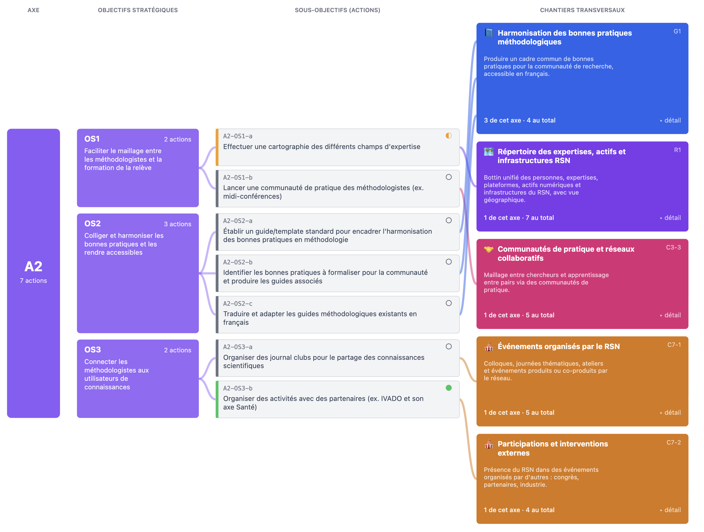

Destinataires : équipe coresponsable de l'Axe 2
Objet : Axe 2 — bilan court terme & comité du 12 juin
📋 Pour coller dans Gmail / Outlook / Apple Mail :
vérifie que axe-2.png est à côté de ce fichier HTML, puis ouvre ce HTML dans Chrome/Safari,
sélectionne tout (Cmd+A) et copie (Cmd+C). L'image se collera correctement avec le texte.
Bonjour à toute l'équipe coresponsable de l'Axe 2,
Pour le comité scientifique du 12 juin, Bouchra Nasri représentera l'Axe 2 et présentera vos avancées récentes.
Nous arrivons à la fin de la période court terme (ans 1-2) de la feuille de route, c'est donc le bon moment pour prendre des nouvelles avant la bascule vers le moyen terme.
⚠️ À garder en tête : la manière dont nous avons regroupé les actions par chantier et projet est encore préliminaire. Votre retour critique est essentiel pour la consolider avant le moyen terme.
Voici comment nous voyons vos actions s'articuler avec les chantiers transversaux du RSN :

Axe 2 → 3 objectifs stratégiques → 7 sous-objectifs (actions) → 5 chantiers transversaux du RSN
🌐 Vue interactive complète
Astuce : sur la vue interactive, cliquez sur chaque chantier pour voir ce que les autres axes y déposent — utile pour repérer les convergences possibles et nous dire si vous trouvez un regroupement mal pensé.
Réalisations associées portées par l'Axe 2 (hors feuille de route officielle) — nous avons recensé ces projets externes auxquels l'Axe 2 contribue activement :
- ✅ Colloque sur les méthodes quantitatives en santé
- ✅ Hackathon santé numérique 2025
- 🟡 Participation au semestre thématique mathématiques et santé
- 🟡 Participation au programme FONCER-Biostat
Si nous en avons oublié ou mal qualifié, dites-le nous.
Quatre questions — une réponse par mail suffit
-
Feuille de route & regroupement préliminaire : sur la vue interactive, les actions OS1/OS2/OS3 sont-elles encore les bonnes ? Et notre proposition de regroupement par chantier et par projet vous paraît-elle pertinente, ou des actions sont-elles mal placées selon vous ?
-
Articulation des actions OS2 : nous proposons de fusionner vos 3 actions de l'OS2 (guide/template + identification des bonnes pratiques + offre en français) en un seul livrable d'harmonisation. Êtes-vous d'accord ?
-
Type de sollicitation souhaité pour la suite : quand un sujet touche votre périmètre méthodologique, comment voulez-vous être impliqués ?
- Participer à des comités de construction (ex. cartographie R1, harmonisation G1…)
- Être consultés pour avis sur les changements importants seulement
- Recevoir uniquement les communications de suivi (pas d'engagement actif)
- Autre : préciser
-
Ressources internes : avez-vous des personnes (étudiant·e·s, postdocs, professionnel·le·s de recherche) financées par les fonds de Max ou autres fonds RSN qui travaillent déjà sur certaines de ces actions / certains de ces chantiers ? Si oui, lesquelles ? L'idée est de les intégrer au mieux dans la coordination des projets transversaux pour éviter doublons et déperdition.
✅ Bonne nouvelle : notre analyse n'a identifié aucune action manquante (gap) pour votre axe — la couverture des bonnes pratiques méthodologiques est complète.
Pour le comité du 12 juin
Pourriez-vous préparer 1 à 2 slides sur ce que l'Axe 2 a avancé récemment ? La présentation sera courte (3 minutes par axe) — l'objectif est simplement de se tenir mutuellement au courant des avancées de chacun et chacune.
Présentation collaborative ici : [LIEN À INSÉRER].
Idéalement avant le 9 juin.
Échange de 20 minutes possible si vous préférez en discuter à l'oral.
Merci à toutes et tous,
[Votre signature]